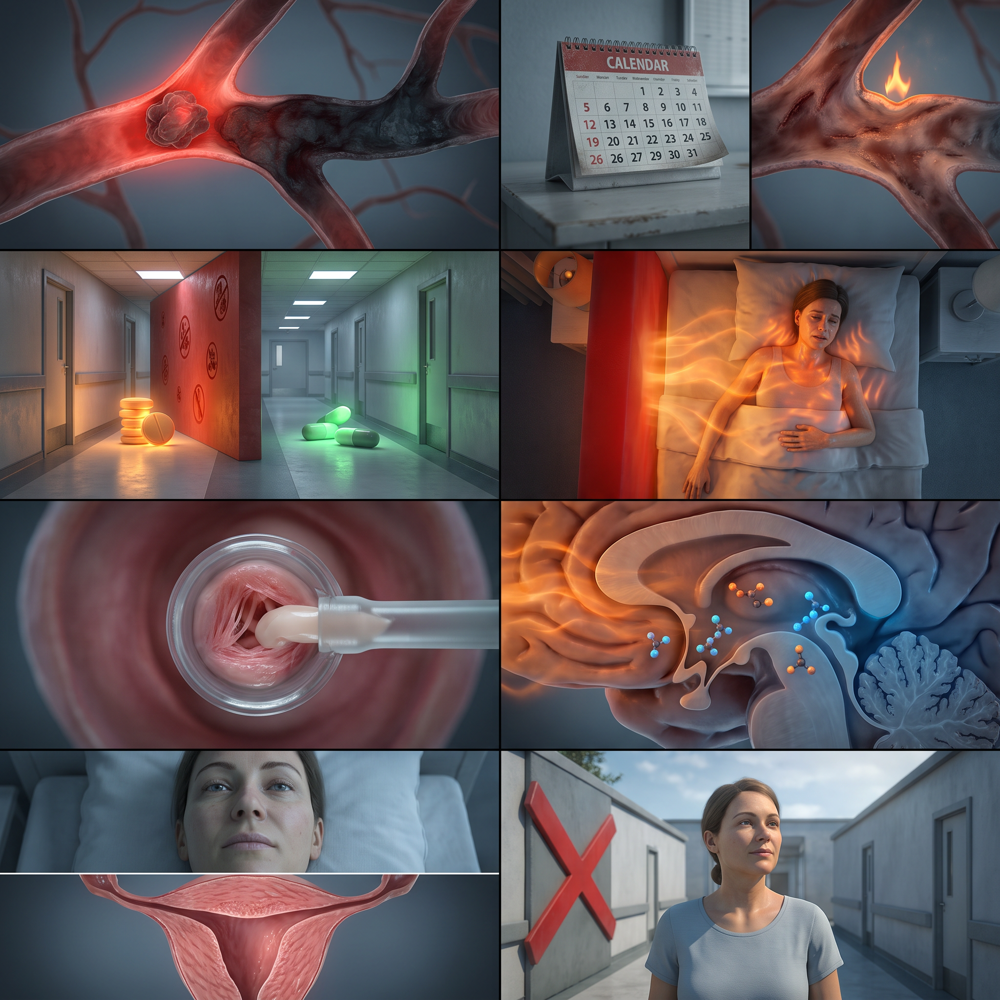
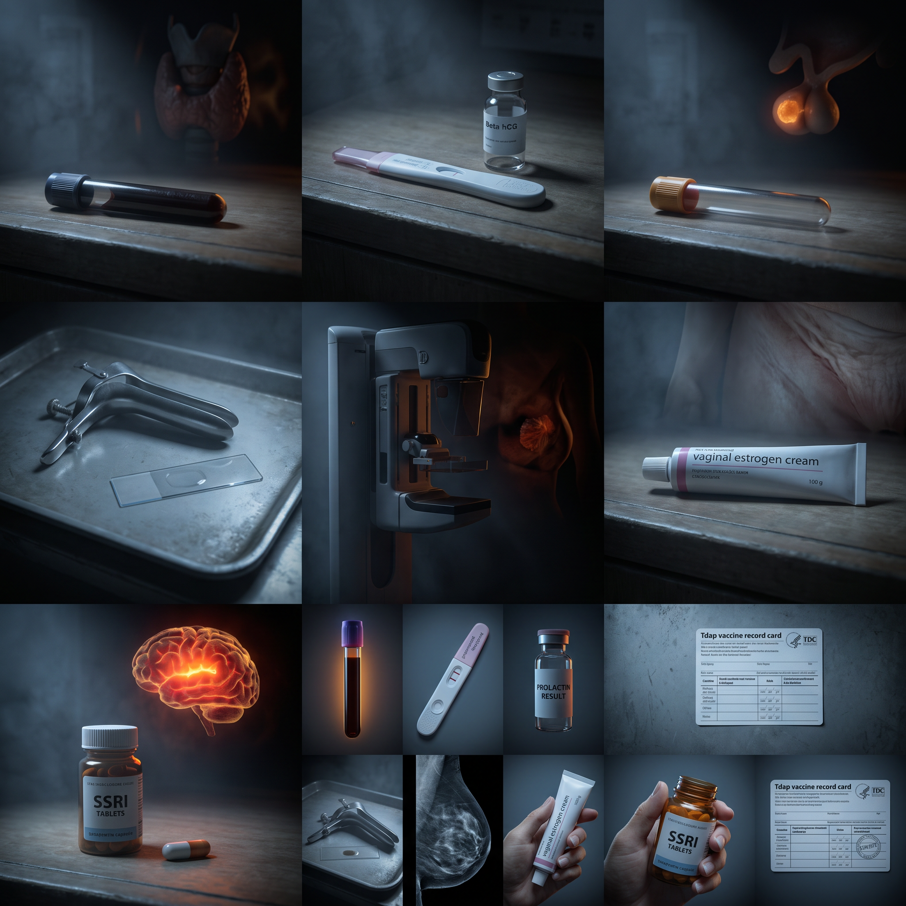

Trigeminal Neuralgia
82.5%
Electric Lightning in V2/V3
Male · Facial pain · Triggered by light touch · 30-second episodes · No V1 involvement
Pulse95 bpm
BP125/85
SettingOffice
Avg Score80.9%
First Principles
The superior cerebellar artery loops over the trigeminal nerve root entry zone. Compression strips myelin. Demyelinated axons fire ectopically and form ephaptic connections — a touch signal jumps to a pain fiber. Carbamazepine blocks voltage-gated sodium channels (NaV), not GABA. Gabapentin/pregabalin are GABAergic and second-line. The hyponatremia from carbamazepine is drug-induced SIADH — entirely separate from channel blockade. Baseline sodium is mandatory.
What I Missed3 gaps
▾
CBC with differential
Recent dental procedures — rule out infection before calling it neuralgic.
Comprehensive metabolic profile
Carbamazepine blocks NaV channels (not GABA). But it causes SIADH. Pre-treatment sodium is mandatory.
CT/MRI head
80-90% vascular loops. 10-20% tumors or MS plaques. Image to rule out the catastrophic.
What I Got Right
▾
Carbamazepine first-line ✓
NaV channel blockade. 100-200 mg BID titrate to effect. No negative updates.
If I Were Your Attending
▾
1
Exam
Normal between paroxysms = TN. Sensory deficits = think tumor or MS.
2
CBC
Dental procedures. Rule out abscess before committing to neuro.
3
CMP
Carbamazepine = NaV block + SIADH risk. Two mechanisms. Baseline Na needed.
4
MRI
T2 posterior fossa. Vascular loop vs tumor. Image to rule out.
5
Carbamazepine
NaV inactivation gate closed. Titrate. Check Na at 2 weeks.
Descent

Gaps

Menopause · TIA Contraindication
33.0%
The Estrogen I Should Never Have Given
Female >45 · Amenorrhea 12+ months · Hot flashes · Dyspareunia · TIA 1 year ago
SettingOffice
Avg Score61.8%
TIA History1 year ago
The Vital Link · Why TIA Means Systemic Estrogen Is Forbidden Forever
Systemic estrogen increases hepatic clotting factors (VII, IX, X, XII, fibrinogen) and decreases antithrombin III and protein S. Net effect: a pro-thrombotic state. In a woman whose cerebral vasculature already demonstrated vulnerability by spawning a TIA, that small thrombotic risk becomes unacceptable. The vessel wall that already produced one clot is the vessel systemic estrogen will tip over the edge again. This contraindication is permanent — not "wait 6 months," not "wait a year." The endothelial injury doesn't reset.
The bifurcation: two symptoms, two separate treatments, neither is systemic estrogen.
• Hot flashes → SSRI/SNRI (venlafaxine, paroxetine) or gabapentin → modulate hypothalamic thermostat, non-hormonal.
• Dyspareunia / vaginal atrophy → vaginal estrogen (cream, ring, tablet) → local delivery, minimal systemic absorption, no thrombotic risk.
The bifurcation: two symptoms, two separate treatments, neither is systemic estrogen.
• Hot flashes → SSRI/SNRI (venlafaxine, paroxetine) or gabapentin → modulate hypothalamic thermostat, non-hormonal.
• Dyspareunia / vaginal atrophy → vaginal estrogen (cream, ring, tablet) → local delivery, minimal systemic absorption, no thrombotic risk.
What I Missed8 gaps across diagnosis, treatment, preventive
▾
TSH
Hyperthyroidism causes hot flashes, diaphoresis, palpitations — identical to menopause. Must rule out.
Beta-hCG (pregnancy test)
Amenorrhea in any woman, regardless of age, requires pregnancy to be ruled out.
Prolactin
Prolactinoma causes amenorrhea, hot flashes, hormonal symptoms — mimics menopause exactly.
Pap smear / wet mount
Rule out infectious causes of dyspareunia (BV, trichomonas, candida) before attributing to atrophy.
Mammography
Must rule out occult breast cancer before initiating any estrogen therapy. Estrogen feeds hormone receptor-positive cancers.
Vaginal estrogen (cream/ring/tablet)
First-line for GSM/dyspareunia. Local delivery, minimal systemic absorption. SAFE despite TIA history. Systemic estrogen is contraindicated — vaginal is not.
SSRI/SNRI or gabapentin for hot flashes
Systemic estrogen is blocked by TIA history. Non-hormonal alternatives are the only option. Venlafaxine, paroxetine, citalopram for vasomotor symptoms.
Tdap vaccine
Every 10 years. Standard preventive care.
The Attending's Lesson
This case hides the highest-yield USMLE trap in menopause management: TIA/stroke = permanent contraindication to systemic estrogen. You will be tested on this. The correct answer splits into two paths: non-hormonal for vasomotor symptoms (SSRI/SNRI or gabapentin) and local vaginal estrogen for GSM. And you always rule out thyroid, pregnancy, prolactinoma, and do a mammogram before starting anything.
What I Got Right
▾
FSH ordered ✓
Elevated FSH helps distinguish menopause from other causes of amenorrhea when the picture is uncertain.
Lubricating jelly ✓
Helps with dyspareunia from vaginal atrophy. Supportive measure.
Correctly avoided systemic estrogen ✓
You didn't order oral combined HRT. That would have been a catastrophic error with the TIA history. Good instinct.
If I Were Your Attending
▾
1
Full exam incl. pelvic
General, CV, abdominal, genital, neuro. Get baseline on a perimenopausal woman.
2
TSH, beta-hCG, prolactin
Before I call this menopause, I rule out hyperthyroidism, pregnancy, and prolactinoma. All three mimic menopause. Menopause is clinical after 45, but I protect against anchoring bias.
3
Pap smear + wet mount
Dyspareunia could be BV, trich, candida — not just atrophy. I examine before I treat.
4
Mammography
Before ANY estrogen product — even vaginal — I confirm there's no occult breast cancer. Estrogen feeds hormone receptor-positive tumors. This is non-negotiable.
5
Vaginal estrogen cream
Local, minimal systemic absorption. Safe despite TIA. Treats dyspareunia directly at the tissue. NOT systemic HRT.
6
SSRI (paroxetine/venlafaxine) or gabapentin
Hot flashes need treatment. Systemic estrogen is permanently off the table due to TIA. Non-hormonal alternatives: SSRI/SNRI modulate the hypothalamic thermostat. Gabapentin works on calcium channels.
7
Tdap vaccine
Every 10 years. Preventive care is never optional on the USMLE.
Descent · TIA Contraindication
Gaps · What I Missed
Postherpetic Trigeminal Neuropathy
80.0%
Same Nerve, Different Trigger
Male · Facial pain after herpes zoster · V2/V3 distribution · Previous shingles outbreak
SettingOffice
Avg Score84.6%
Prior TN Case82.5%
The Critical Distinction
Classic trigeminal neuralgia (the case you just got 82.5% on): vascular compression of the nerve root → demyelination → ephaptic firing → carbamazepine (NaV channel blocker).
Postherpetic trigeminal neuropathy (this case): herpes zoster damages the nerve directly → inflammatory demyelination + peripheral sensitization → gabapentin/pregabalin (GABAergic, binds alpha-2-delta subunit of calcium channels).
Same nerve. Same distribution (V2/V3). Same electric pain. Different cause. Different first-line drug. The herpes zoster history is the differentiator. Carbamazepine still works for both — but it's suboptimal for postherpetic, and CCS deducts points.
Postherpetic trigeminal neuropathy (this case): herpes zoster damages the nerve directly → inflammatory demyelination + peripheral sensitization → gabapentin/pregabalin (GABAergic, binds alpha-2-delta subunit of calcium channels).
Same nerve. Same distribution (V2/V3). Same electric pain. Different cause. Different first-line drug. The herpes zoster history is the differentiator. Carbamazepine still works for both — but it's suboptimal for postherpetic, and CCS deducts points.
What I Missed1 treatment gap
▾
Gabapentin/pregabalin (ordered carbamazepine instead)
Carbamazepine is first-line for classic TN (NaV channel blockade at compressed root). For postherpetic neuralgia, gabapentin/pregabalin are first-line (alpha-2-delta calcium channel blockade in sensitized peripheral nerves). The herpes zoster history changes the pathophysiology — and the treatment. Points deducted for suboptimal first-line choice.
The Rule
Classic TN: no rash history, vascular compression at root entry zone, carbamazepine/oxcarbazepine first-line.
Postherpetic TN: preceded by zoster rash in same dermatome, gabapentin/pregabalin first-line. Tricyclics second-line. Antiseizure meds (carbamazepine) only after first two fail.
Postherpetic TN: preceded by zoster rash in same dermatome, gabapentin/pregabalin first-line. Tricyclics second-line. Antiseizure meds (carbamazepine) only after first two fail.
What I Got Right
▾
CBC + CMP ✓
Ruled out infection and got baseline labs. The trigeminal neuralgia case taught you this — and you applied it here.
100% diagnosis orders ✓
Full exam, CBC, CMP, correct diagnosis of postherpetic neuropathy. You identified the zoster link immediately.
No negative updates · Correct location · Correct timing ✓
Flawless execution. Outpatient. Immediate treatment. No delays.
No plate generated